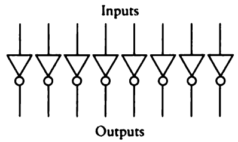

Adding subtraction to the binary adding machine
2022-08-26
In my last post I described how I was able to follow the instructions in chapter twelve of "Code: The Hidden Language of Computer Hardware and Software" by Charles Petzold to create an 8-bit binary adding machine in Minecraft and JavaScript. In this post, I am going to continue with chapter twelve of this book to add subtraction to the binary adding machine.
The major addition to the adding machine is some circuitry that calculates a ones' complement of an 8-bit number. The ones' complement of a binary number is equivalent to inverting its individual bits. In other words, all the 1s become 0s and all the 0s become 1s. So I'll start by creating a very simple machine that calculates the ones' complement of a given binary number.

All I did was add an inverter to each input, just like this picture:


As you can see, the ones' complement of 0101 0110 is 1010 1001, as indicated by the top row of lights.
Here's my JavaScript implementation:
const onesComplement = (num) => {
let onesCompArr = []
for (let i = 0; i < num.length; i++) {
if (parseInt(num[i])) {
onesCompArr.push(0)
} else {
onesCompArr.push(1)
}
}
return onesCompArr.join('')
}
This is great, but our goal is to create a machine that can perform addition and subtraction. This ones' complement machine always inverts the bits to calculate the ones' complement, but we need it to invert the bits only if a subtraction if we want a subtraction to be performed. To do this, we'll create a circuit like this:

You can read about the meaning of the symbols in this diagram in my last post where I describe the logic gates in more detail (or better yet, read Charles' book). In that post, I already described how we can combine an OR, NAND, and AND gate to create a XOR gate. So I'll line up eight XOR gates:

Then connect each one of their B inputs together and connect that to a lever like this:

This lever (or switch) will act as our invert signal. If the invert signal is 0, the eight outputs of the XOR gate are the same as the eight inputs. For example, if 0110 0001 is input, then 0110 0001 is output (as indicated by the lit lamps in the background):

And if the invert signal is 1, the eight input signals are inverted, so the output becomes 1001 1110:

The ones' complement of 0110 0001 is 1001 1110. Now we can wire this ones' complement device to our original 8-bit adding machine in this way:

The B inputs of the original binary adding machine are now wired as inputs to the ones' complement machine we just made. Also there's a new "SUB" signal. This is the invert signal to the ones' complement device we just made, and it indicates that we want to perform a subtraction. I've added a lever to the leftmost side of the control panel of the original binary adding machine which will act as our SUB signal.

When this lever is activated, it will indicate we want to perform a subtraction, and the B inputs (the second row of levers on the control panel) will be inverted in our ones' complement machine before being routed as input to the 8-bit adder. Also it will cause a CI (Carry In) signal to be activated at the beginning of the 8-bit adder. It will also cause the A input of the XOR gate on the leftmost part of the diagram to be a voltage.
If the SUB lever is activated, and as long as the minuend (the top row of levers, or A input) is larger than the subtrahend (the bottom row of levers, or B input), the bottom row of lamps will display the difference. If a subtraction is being performed, and the subtrahend is larger than the minuend (underflow), then this will cause the "OVERFLOW/UNDERFLOW" to light up which will indicate that a negative number is being calculated, and our machine is not able to display it for us.
Here I will demonstrate an underflow by activating the SUB signal (because we want to perform a subtraction) and entering a subtrahend which is greater than the minuend.

As you can see, I enter 0100 0000 as the minuend (top row of levers, or A input), and 1100 0000 as the subtrahend (bottom row of levers, or B input). This results in a negative number being calculated, so the OVERFLOW/UNDERFLOW lamp is activated, in this case to indicate an underflow.
If the SUB lever is not activated, this will indicate we're performing our usual addition. If the numbers we enter are greater than 255 (overflow), this will cause the "OVERFLOW/UNDERFLOW" lamp to light up. In this case, since we're performing an addition, it will indicate that a number is being calculated that is greater than 255, which is called an overflow. Here I will demonstrate an overflow:

As you can see, I enter 0100 0000 for the top row of levers (A input) and 1110 0000 on the bottom row (B input). The sum is greater than 255, so the OVERFLOW/UNDERFLOW lamp is activated, in this case indicating an overflow.

Let's test a subtraction in which the minuend is larger than the subtrahend. First I'll activate the SUB signal on the left, to tell the machine we want to perform a subtraction. I'll enter 1111 0110 as the minuend, and 0001 1010 as the subtrahend. Since the minuend is larger than the subtrahend, our machine can display the result with the bottom row of lamps. The difference is 1101 1100, as indicated by the bottom row of lamps. It works!